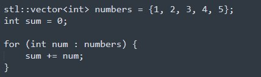
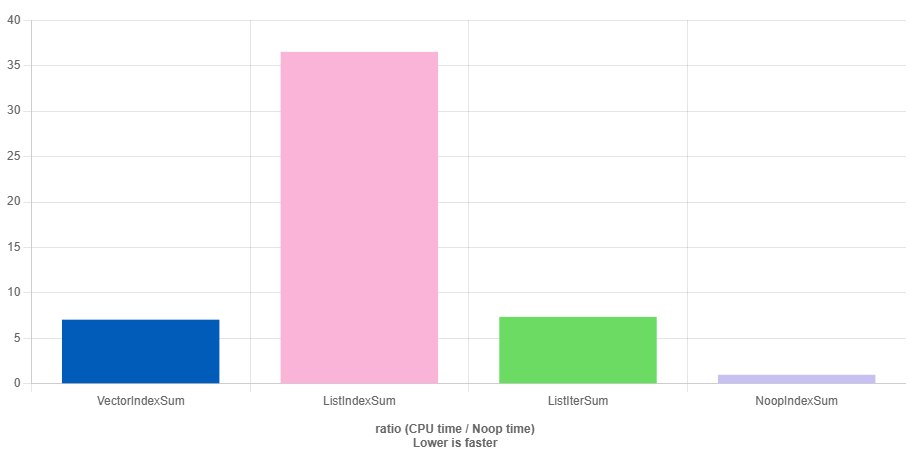

We all write loops — in every piece of software, in every game they'll be there. You can't do without them. Can you say what this code does?

Sure, it's simple: the code sums up the array's elements. My lead gives a similar task about summing or some other operation over an array in interviews :) People look surprised, and then most write exactly what was above. And there are three things here — the person either was too lazy to read about STL algorithms, or doesn't trust us and knows about them but thinks we won't understand, or knows but doesn't see why to show off that knowledge — why? Let's leave the question open. This loop example is the simplest algorithm.
STL algorithms are a real Swiss Army knife for a developer. They don't just help you write code, they make it cleaner, clearer and more reliable. In projects with large codebases, where legacy code isn't always stable or easy to maintain, this is especially important. Anyone who has written loops by hand has run into bugs: going out of array bounds, forgetting to handle an empty container, making an extra copy. STL algorithms get rid of many problems, letting you express your thoughts briefly and clearly. Instead of sheets of index-laden code — a few lines with obvious meaning. So if you're not yet familiar with the standard algorithms, it's high time to fix that. It's one of those tools that, once mastered, you can't forget — like riding a bicycle, a good industrial one designed by Knuth or Sutter, reliable and with a serial number.
This is part of the "Game++" series:
Game++. Juggling STL algorithms <=== You are here
A bit of history
Below I'll use the abbreviation gtl, just like std, stl, eastl — they all denote the standard library. GTL — game templates library, a set of algorithms implemented by this or that engine or framework. Developers usually prefer to make their own algorithm implementations to avoid dependencies on vendors and compilers, and to unify how algorithms work across platforms — something std, unfortunately, can't boast of.
Most implementations are more or less similar, and many lean on EASTL as one of the first that became publicly available. The first public commits in EASTL (Electronic Arts Standard Template Library) date to 2005 as part of Electronic Arts' internal tooling, but the history of its origin, by various accounts, starts in 1995, or even a year or two earlier.
The library was originally created as a high-performance alternative to the standard STL, optimized for the game projects EA was developing. EASTL's main goal was predictable memory management and reproducible results across platforms. EASTL is fully compatible with the standard library and provides containers and algorithms analogous to the STL, but with a focus on game and engine development. Later, in 2007, the company open-sourced the project, and since then it's been actively used in the game industry. As usual, the implementation has many critics, but as with programming languages, a language is either criticized or not written in at all.
Continuing to sum the array
Coming back to the question posed at the start of the article — a minority, about a quarter, write it like this.
gtl::vector numbers = {1, 2, 3, 4, 5};
int sum = gtl::accumulate(numbers.begin(), numbers.end(), 0);That's actually all I expect from this question. It's not a test of your ability to write the logic to sum an array, it's a test that the new person and the team will be able to speak the same language. This very short example shows that you know about algorithms, see how and where they can be used (at least partly — for positions above junior we currently have no algo interview, because it has been showing its uselessness for a while now), and that your code will be expressive and less error-prone.
And do you know what bug can happen? A very simple example, all the same, just that now we have strings. The string here acts as a class that allocates data on creation.
std::vector numbers = {"1", "2", "3", "4", "5"};
string sum = 0;
for (string num : numbers) {
sum += num;
}Or another example, also very common. You need to selectively copy an array — used for various filters, caches, archives, etc.
std::vector numbers = {1, 2, 3, 4, 5, 6, 7, 8, 9, 10};
std::vector odds;
for (int num : numbers) {
if (!!(num % 2)) {
odds.push_back(num);
}
}Same as the for, but more expressive and with less code.
std::vector<int> numbers = {1, 2, 3, 4, 5, 6, 7, 8, 9, 10};
std::vector<int> odds;
std::copy_if(numbers.begin(), numbers.end(), std::back_inserter(odds),
[] (const auto &v) { return !!(v % 2); })
Another example
If you're even a little familiar with programming, then glancing at this code you'll understand it copies elements from the numbers array into another array by some condition. In principle, you don't even need to look at the condition itself, because in this case we look at the logic of what it does.
std::vector numbers = {1, 2, 3, 4, 5, 6, 7, 8, 9, 10};
std::vector odds;
std::copy_if(numbers.begin(), numbers.end(), std::back_inserter(odds),
[] (auto &v) { return v % 2 != 0; })It could even be something like this:
std::copy_if(numbers.begin(), numbers.end(), std::back_inserter(odds),
func);Even if you don't know what std::back_inserter means, you immediately understand — data is copied from one array into another, because the code explicitly says: copy. That's the difference from writing raw logic that you have to read and comprehend before moving on.
It's just 10–15 seconds. But if you multiply that by the number of lines in your codebase and factor in more complex scenarios, how much time do you spend parsing the logic inside a block instead of understanding what this piece of code does as a whole?
std::copy/copy_if is an algorithm available in all STL implementations (and there are more than a dozen), and every vendor tries to make their own. Yes, some elements in this code look more like noise than useful information — for example, .begin() and .end() — but that was done because of the data-orthogonality principle. In any case, such use of the STL lays a good and, most importantly, standard foundation for writing clear and self-documenting code. It's like speaking the same language.
All STL algorithms, developed over decades of the language's evolution, state exactly what they do. They do NOT expose how they do it. This is directly tied to the "write logic, not code" development principle Sutter often talks about. But I prefer the "zero copy programming" style that Alexandrescu spreads to the masses.
How iterators work
Let's dig a bit deeper into the previous example; if you're familiar with this part of the language, feel free to skip ahead. There's nothing interesting here — std::copy_if takes three iterators as input:
the start and end of the input range containing the elements to copy.
the start of the output range where the copies should be placed, plus a functor for the check.
template<typename ...>
OutputIterator copy_if(InputIterator first,
InputIterator last,
OutputIterator out,
Func func);The start of a range is the iterator pointing to its first element, and the end of a range is the iterator pointing to the element past the last: the output iterator in std::copy_if is the start of the range into which elements will be copied. std::copy_if walks the input range and sequentially copies all elements that satisfy the condition into the output range starting at the out iterator.
The internal implementation of std::copy_if and most algorithms requires the output container to have enough room for all the copied elements. However, in most cases we can't compute the needed amount of memory and resize the output collection; sometimes it's possible but inconvenient, or not always practical.
This is where std::back_inserter comes to the rescue. It creates an iterator bound to the given container. When a value is written through this iterator, the container's push_back method is effectively called with that value. Now, when using other containers of unknown size — which will be the case 90% of the time — there's no need to resize it manually.
Fluent C++
Knowing and applying algorithms is ordinary "conversational" C++. It's already part of the language, without which many developers don't perceive it as complete. And being able to read such code becomes not so much a desirable skill as a necessary one — and you shouldn't be afraid to write such code.
I hope it's now clear to you what one of the main advantages of algorithms is — their standard expressiveness; they change the abstraction level of the logic, removing the need to "write separate words" and letting you write whole sentences at once. Algorithms show What you do in this piece of code, not How you do it.
There are other pluses to algorithms: they help avoid common bugs, such as going out of array bounds. You can still write code that crashes, but the probability is much lower than when working with raw indices.
std::vector<int> source = {1, 2, 3, 4, 5};
std::vector<int> destination(3); // allocate with size of only 3.
// Attempt to copy all 5 elements from source to destination.
// causes a write out of array bounds.
std::copy(source.begin(), source.end(), destination.begin());
int sum = *std::max_element(destination.begin(), destination.end());
for (int t : destination) {
printf("%d", t);
}
printf("\n%d", ((int*)destination.data())[4]);
printf("\n%d", sum);
>> 123
>> 5
>> 3A very recent example from a live, well-known project: this logic hadn't changed since 2010. Until a refactor was done, this code looked for the maximum damage among incoming hits (don't ask why it's like this, the code is very legacy, maybe they wanted to add some extra logic there).
std::vector<Hit> hits;
...
int maxDamage = -1;
for (size_t i = 0; i < hits.size() - 1; ++i) { // int -> size_t
int pa = hits[i];
int pb = hits[i + 1];
maxDamage = std::max(maxDamage, std::max(pa, pb));
...
}
updateDamage(maxDamage)
...int was changed to size_t when clearing clang warnings, and they got a crash on empty collections. If you rely only on the logic that's there, it could have been done more expressively and safely, and it would also avoid another common bug — handling empty collections. There's one nuance here: I don't handle the case where Hits contains only one element; the original logic returns -1 in that case.
auto it = std::max_element(hits.begin(), hits.end());
int maxDamage = it != hits.end() ? *it : -1;
updateDamage(maxDamage)Algorithms also remove "smeared perf" bugs that happen when you use indices on a container. In the general case we can't know how the index-access operator is implemented. Again, the test is synthetic, but real examples it's based on are all over existing code. One of them, which I've run into more than once in the code of various game engines, is when fans of iterating over a list add a "convenient" way to do it via an index. There are no allocations that would show up in a profiler — the function just slowly starts "eating" time, and sometimes it's really small, but in total it adds up enough to cost you a frame or two before you notice the anomaly and take action. (https://quick-bench.com/q/rg6kugF2MYqDIbHK_HsP4Gki_Dg)
list::at(int i) {
// Advance the iterator i times
return *std::next(lst.begin(), i);
}
int listSum = 0;
for (size_t i = 0; i < lst.size(); ++i) {
listSum += list.at(i);
}Smeared perf
std::vector<int> vec = {1, 2, 3, 4, 5};
std::list<int> lst = {6, 7, 8, 9, 10};
static void VectorIndexSum(benchmark::State& state) {
// Code inside this loop is measured repeatedly
for (auto _ : state) {
int vecSum = 0;
for (size_t i = 0; i < vec.size(); ++i) {
vecSum += vec[i]; // Ordinary index access
}
// Make sure the variable is not optimized away by compiler
benchmark::DoNotOptimize(vecSum);
}
}
// Register the function as a benchmark
BENCHMARK(VectorIndexSum);
static void ListIndexSum(benchmark::State& state) {
// Code before the loop is not measured
for (auto _ : state) {
int listSum = 0;
for (size_t i = 0; i < lst.size(); ++i) {
listSum += *std::next(lst.begin(), i); // Advance the iterator i times
}
benchmark::DoNotOptimize(listSum);
}
}
BENCHMARK(ListIndexSum);
static void ListIterSum(benchmark::State& state) {
// Code before the loop is not measured
for (auto _ : state) {
int listSum = 0;
for (auto it = lst.begin(); it != lst.end(); ++it) {
listSum += *it; // Advance the iterator
}
benchmark::DoNotOptimize(listSum);
}
}
BENCHMARK(ListIterSum);
static void NoopIndexSum(benchmark::State& state) {
// Code inside this loop is measured repeatedly
for (auto _ : state) {
int vecSum = 0;
// Make sure the variable is not optimized away by compiler
benchmark::DoNotOptimize(vecSum);
}
}
// Register the function as a benchmark
BENCHMARK(NoopIndexSum);

STL algorithms are free of most of these problems, and the test coverage — which you (unless you're a compiler developer, of course) will never be able to do yourself — is further proof of that. These algorithms were developed by people who understood well what they were doing, and they were thoroughly tested by the community and by large codebases and projects. By using algorithms instead of reinvented wheels and raw loops, you automatically get code quality on the level of a compiler or large open-source projects.
As usual there are tons of ways to shoot yourself in the foot with any framework, however well-designed and safe, but here at least there's a silencer, additionally wrapped in rags. It'll hurt less and will fail on tests or internal asserts; if anything, you can bandage your foot with a rag from the silencer and hop along until the session closes.
Data + Algorithms
Another good property of algorithms is the separation of algorithms from the data they operate on. Nicolai M. Josuttis, in his book The C++ Standard Library: A Tutorial and Reference, devotes quite a bit of time to the idea that the STL's core principle is the separation of algorithms and containers via iterators, which lets data structures and operations on them evolve independently. To a certain degree, of course.
Perhaps the term "iterator separation" is the right one, but in Russian it sounds like "separation via iterators" and is rarely seen in Russian literature; our translators more often use another term — "generic programming" or the fancier "data orthogonality." The STL has plenty of simple and obvious algorithms, but it also has a lot of broadly applicable solutions that in the naive variant run in O(n²) but in the STL are optimized to O(n).
These solutions cover 80% of everyday work. At first the variety of STL algorithms may feel overwhelming, and developers, even experienced ones, sometimes limit themselves to the familiar ones like std::copy, std::count or std::find, since their purpose is obvious, and rarely look further than std::is_heap_until.
It's a normal and natural reaction to ignore the "strange" algorithms that seem too complex or rare, but if they were truly rare they wouldn't have been put into the standard library. I periodically monitor new-standard proposals regarding algorithms, and every year more than a dozen are shared for discussion, but genuinely new ones are rarely accepted. Maybe that's right — almost all the STL algorithms currently in the library are useful in everyday work, you just need to know them and see where they fit.
Shader caching
Take, for example, std::set_difference — this algorithm performs a set difference for any sorted containers. Given sorted containers A and B, you can get the elements that are in A but absent from B.
Its applications are very broad; let me give an example from the current engine, where this algorithm is used in shader caching. Each time the game starts, it updates the current set of shaders. The shader cache is represented as an associative container holding keys and values, with several identical keys allowed, because a shader can exist in different variations for different unit types. The game also supports mods, so it needs to store different shader versions to ensure compatibility between a mod and the current engine version. std::multimap is ideal for such cases.
stl::multimap<Key, Shader> shaderCache();Adding new data to the cache happens through some addNewShaders function, where you have to make sure not to add already-existing results into the cache, otherwise we risk accumulating duplicates. This leads not only to memory overuse but also to logical problems and even glitches (visual artifacts) in the game itself. I recommend trying to understand this code line by line, just to have something to compare with below. I think the programmer who wrote it simply had little choice — the solution was written for 2009 hardware. Here's how it was implemented without algorithms:
void addNewShaders(stl::multimap const& results) {
...
for (stl::multimap<Key, Shader>::const_iterator it = newShaders.begin(); it != newShaders.end(); ++it)
{
using iterator = stl::pair<std::multimap<Key, Shader>::const_iterator, stl::multimap<Key, Shader>::const_iterator>::type;
iterator range = cachedShaders.equal_range(it->first);
if (range.first == range.second)
{
stl::multimap<Key, Shader>::const_iterator it2 = it;
while (!(it2->first < it->first) && !(it->first < it2->first))
{
++it2;
}
cachedShaders.insert(it, it2);
}
}
...
}The code was written long ago, the person no longer works at the studio, there's no one to ask. Effectively that programmer wrote his own implementation of set_difference and crossed it with insertion; the possible reason is given below. Here's how it works:
The for loop iterates over all elements of the newShaders container. The variable it is a const iterator. With iterator range = cachedShaders.equal_range(it->first);it searches for the range of elements in the cachedShaders container whose key equals it->first (the key of the current element from newShaders).
The equal_range function returns a pair of iterators (range.first and range.second), where:
- range.first — the start of the range of elements with the given key;
- range.second — the iterator pointing to the first element with a different key (the end of the range).
The condition if (range.first == range.second) checks that cachedShaders has no element with the key it->first. If the range is empty, then there are no elements with that key.
If cachedShaders has no element with the given key, then we need to add from newShaders all elements whose key equals it->first. For this an additional iterator it2 is created, initialized to it: stl::multimap::const_iterator it2 = it; Then a loop runs:
while (!(it2->first < it->first) && !(it->first < it2->first))
{
++it2;
}Here the comparison idiom using the < operator for strict ordering is used. If neither it2->first is less than it->first, nor it->first is less than it2->first, the keys are considered equivalent. Thus, after exiting the loop, it2 points to the first element in newShaders whose key differs from it->first.
After the inner loop finishes, the range of elements from it to it2 (i.e. all elements with key it->first) is inserted into cachedShaders:
cachedShaders.insert(it, it2); if cachedShaders has no elements with the given key yet, the whole block of elements from newShaders with that key is inserted.
Well? Is it all clear?
And how to do it with algorithms?
And now, instead of that relatively complex logic, let's try to understand what needed to be done. We need to add to the cache the elements that are in newShaders but not in the cache (cachedShaders). And here stl::set_difference comes to the rescue:
stl::multimap<Key, Shader> shadersToAdd;
stl::set_difference(newShaders.begin(),
newShaders.end(),
cachedShaders.begin(),
cachedShaders.end(),
stl::inserter(shadersToAdd, shadersToAdd.end()),
compareShaderHash);
stl::copy(shadersToAdd.begin(), shadersToAdd.end(),
stl::inserter(cachedShaders, cachedShaders.end()));stl::inserter is similar to stl::back_inserter, except that it calls the insert method of the container it's bound to instead of push_back, and compareShaderHash is a function we define to tell stl::set_difference how to compare elements in the containers.
There's one nuance here: the first variant works without an additional allocation in the form of a temporary shadersToAdd container, and apparently that was the constraint that led to that solution. But looking at shader volumes of hundreds of kilobytes per update, I concluded you can trade memory for code readability. In terms of speed, the second variant is a bit slower, but not critically.
You've seen two code fragments that do the same thing. To understand how the first works, I had to spend several minutes and annotate what each line does. In the second it's directly visible what it does. In this example, of course, you need to understand what all those arguments to set_difference mean, and that can make it harder to grasp at first if you're not used to it. But as I wrote above, it's better to look at the logic, not the implementation.
Worth a thousand words
I want to bring you to the point that understanding STL algorithms is just as important as knowing the language basics, templates, and good design and programming practices. They're the same kind of keywords as if, else, for, auto, only at the level of logic.
The article turned out more of an overview, and there aren't many examples. To make it clear how relevant algorithms are in current gamedev, I'll leave here the ones recommended for understanding at our studio, along with the patterns of how they show up in code. I copied the examples from our corp wiki — I hope they're not too NDA :) But if you find a mistake, write in the comments too.
std::accumulate
std::vector<int> numbers = {1, 2, 3, 4, 5};
int sum = std::accumulate(numbers.begin(),
numbers.end(), 0.f)std::vector<int> numbers = {1, 2, 3, 4, 5};
int sum = initial_value;
for (int number : numbers) {
sum += number;
}
std::all_of
int ar[6] = {1, 2, 3, 4, 5, -6};
// Checking if all elements are positive
bool allPositive = all_of(ar, ar+6, [](int x) { return x>0; })bool allPositive = true;
// Manual check if all numbers are positive
for (int num : numbers) {
if (num <= 0) {
allPositive = false;
break;
}
}std::any_of
std::vector<int> numbers = {1, 3, 5, 8, 11};
// Check if any number in the vector is even
bool hasEven = std::any_of(
numbers.begin(),
numbers.end(),
[](int num) { return num % 2 == 0; }
);std::vector<int> numbers = {1, 3, 5, 8, 11};
bool hasEven = false;
// Manual check if any number is even
for (int num : numbers) {
if (num % 2 == 0) {
hasEven = true;
break;
}
}std::none_of
std::vector<int> numbers = {1, 3, 5, 7, 9};
// Check if no number in the vector is even
bool noEven = std::none_of(
numbers.begin(), numbers.end(),
[](int num){ return !(num%2);})std::vector<int> numbers = {1, 3, 5, 7, 9};
bool noEven = true;
for (int num : numbers) {
if (num % 2 == 0) {
noEven = false;
break;
}
}std::find
std::vector<int> numbers = {10, 20, 30, 40, 50};
int target = 30; // Value to find
auto it = std::find(numbers.begin(),
numbers.end(), target);
bool found = it != numbers.end();std::vector<int> numbers = {10, 20, 30, 40, 50};
bool found = false;
for (int num : numbers) {
if (num == 30) {
std::cout << "Found " << num << "\n";
found = true;
break;
}
}std::find_if
std::vector<int> numbers = {10, 20, 30, 40, 50};
auto it = std::find_if(numbers.begin(), numbers.end(),
[](int num) { return num > 25; });std::vector<int> numbers = {10, 20, 30, 40, 50};
bool found = false;
for (int num : numbers) {
if (num > 25) {
found = true;
break;
}
}std::find_if_not
std::vector<int> numbers = {10, 20, 30, 40, 50};
auto it = std::find_if_not(
numbers.begin(), numbers.end(),
[](int num) { return num > 25; });std::vector<int> numbers = {10, 20, 30, 40, 50};
bool found = false;
for (int num : numbers) {
if (num <= 25) {
found = true;
break;
}
}std::find_end
std::vector<int> numbers = {1, 2, 3, 4, 5, 6, 7, 8};
std::vector<int> subsequence = {4, 5};
auto it = std::find_end(
numbers.begin(), numbers.end(),
subsequence.begin(), subsequence.end());std::vector<int> numbers = {1, 2, 3, 4, 5, 6, 7, 8};
std::vector<int> subsequence = {4, 5};
bool found = false;
for (size_t i = numbers.size() - subsequence.size(); i != (size_t)-1; --i) {
bool match = true;
for (size_t j = 0; j < subsequence.size(); ++j) {
if (numbers[i + j] != subsequence[j]) {
match = false;
break;
}
}
if (match) {
found = true;
break;
}
}std::find_first_of
std::vector<int> numbers = {1, 2, 3, 4, 5, 6};
std::vector<int> set = {3, 7, 8};
auto it = std::find_first_of(
numbers.begin(), numbers.end(),
set.begin(), set.end());std::vector<int> numbers = {1, 2, 3, 4, 5, 6};
std::vector<int> set = {3, 7, 8};
bool found = false;
for (int num : numbers) {
for (int s : set) {
if (num == s) {
found = true;
break;
}
}
if (found) break;
}std::adjacent_find
std::vector<int> numbers = {1, 2, 3, 4, 4, 6, 7};
auto it = std::adjacent_find(
numbers.begin(), numbers.end());std::vector<int> numbers = {1, 2, 3, 4, 4, 6, 7};
bool found = false;
for (size_t i = 0; i < numbers.size() - 1; ++i) {
if (numbers[i] == numbers[i + 1]) {
found = true;
break;
}
}std::count
std::vector<int> numbers = {1, 2, 3, 4, 5, 5, 6, 7, 5};
int count = std::count(
numbers.begin(), numbers.end(), 5);std::vector<int> numbers = {1, 2, 3, 4, 5, 5, 6, 7, 5};
int count = 0;
for (int num : numbers) {
if (num == 5) {
++count;
}
}std :: count_if
std::vector<int> numbers = {1, 2, 3, 4, 5, 6, 7, 8, 9};
int count = std::count_if(numbers.begin(), numbers.end(), [](int num) {
return num % 2 == 0; // Count even numbers
});std::vector<int> numbers = {1, 2, 3, 4, 5, 6, 7, 8, 9};
int count = 0;
for (int num : numbers) {
if (num % 2 == 0) { // Count even numbers
++count;
}
}std::mismatch
std::vector<int> range1 = {1, 2, 3, 4, 5};
std::vector<int> range2 = {1, 2, 0, 4, 5};
auto result = std::mismatch(
range1.begin(), range1.end(),
range2.begin());std::vector<int> range1 = {1, 2, 3, 4, 5};
std::vector<int> range2 = {1, 2, 0, 4, 5};
bool foundDifference = false;
for (size_t i = 0; i < range1.size() && i < range2.size(); ++i) {
if (range1[i] != range2[i]) {
foundDifference = true;
break;
}
}std::equal
std::vector<int> range1 = {1, 2, 3, 4, 5};
std::vector<int> range2 = {1, 2, 3, 4, 5};
std::equal(range1.begin(), range1.end(),
range2.begin())std::vector<int> range1 = {1, 2, 3, 4, 5};
std::vector<int> range2 = {1, 2, 3, 4, 5};
bool areEqual = true;
for (size_t i = 0; i < range1.size(); ++i) {
if (range1[i] != range2[i]) {
areEqual = false;
break;
}
}std::is_permutation
std::vector<int> range1 = {1, 2, 3, 4, 5};
std::vector<int> range2 = {5, 4, 3, 2, 1};
std::is_permutation(range1.begin(), range1.end(),
range2.begin())std::vector<int> range1 = {1, 2, 3, 4, 5};
std::vector<int> range2 = {5, 4, 3, 2, 1};
std::vector<int> temp = range2;
std::sort(range1.begin(), range1.end());
std::sort(temp.begin(), temp.end());
bool isPermutation = (range1 == temp);std::search
std::vector<int> range = {1, 2, 3, 4, 5, 6, 7};
std::vector<int> subsequence = {3, 4, 5};
auto it = std::search(range.begin(), range.end(),
subsequence.begin(),
subsequence.end());
const bool found = (it != range.end());std::vector<int> range = {1, 2, 3, 4, 5, 6, 7};
std::vector<int> subsequence = {3, 4, 5};
bool found = false;
for (size_t i = 0; i <= range.size() - subsequence.size(); ++i) {
bool match = true;
for (size_t j = 0; j < subsequence.size(); ++j) {
if (range[i + j] != subsequence[j]) {
match = false;
break;
}
}
if (match) {
found = true;
break;
}
}std::search_n
std::vector<int> range = {1, 2, 3, 3, 3, 4, 5};
int value = 3;
size_t count = 3;
auto it = std::search_n(range.begin(), range.end(),
count, value);
bool found = (it != range.end());std::vector<int> range = {1, 2, 3, 3, 3, 4, 5};
int value = 3;
size_t count = 3;
bool found = false;
for (size_t i = 0; i <= range.size() - count; ++i) {
bool match = true;
for (size_t j = 0; j < count; ++j) {
if (range[i + j] != value) {
match = false;
break;
}
}
if (match) {
found = true;
break;
}
}std::copy
std::vector<int> source = {1, 2, 3, 4, 5};
std::vector<int> destination(source.size());
std::copy(source.begin(), source.end(),
destination.begin());std::vector<int> source = {1, 2, 3, 4, 5};
std::vector<int> destination(source.size());
for (size_t i = 0; i < source.size(); ++i) {
destination[i] = source[i];
}std::copy_n
std::vector<int> source = {1, 2, 3, 4, 5};
std::vector<int> destination(3);
std::copy_n(source.begin(), 3, destination.begin());std::vector<int> source = {1, 2, 3, 4, 5};
std::vector<int> destination(3);
for (size_t i = 0; i < 3; ++i) {
destination[i] = source[i];
}std::copy_if
std::vector<int> source = {1, 2, 3, 4, 5, 6, 7};
std::vector<int> destination;
std::copy_if(source.begin(), source.end(),
std::back_inserter(destination),
[](int num) { return num % 2 == 0; });std::vector<int> source = {1, 2, 3, 4, 5, 6, 7};
std::vector<int> destination;
for (int num : source) {
if (num % 2 == 0) {
destination.push_back(num);
}
}std::copy_backward
std::vector<int> source = {1, 2, 3, 4, 5};
// Size of destination should be at least the same as source
std::vector<int> destination(5);
std::copy_backward(source.begin(), source.end(), destination.end());std::vector<int> source = {1, 2, 3, 4, 5};
// Size of destination should be at least the same as source
std::vector<int> destination(5);
for (size_t i = 0; i < source.size(); ++i) {
destination[destination.size() - 1 - i] = source[i]; // Copy backward
}std::move
std::vector<int> source = {1, 2, 3, 4, 5};
std::vector<int> destination(5);
std::move(source.begin(), source.end(),
destination.begin());
// source vector will be empty after this algostd::vector<int> source = {1, 2, 3, 4, 5};
std::vector<int> destination(5);
for (size_t i = 0; i < source.size(); ++i) {
// Move elements manually
destination[i] = std::move(source[i]);
}
source.clear();std::move_backward
std::vector<int> source = {1, 2, 3, 4, 5};
std::vector<int> destination(5);
std::move_backward(source.begin(), source.end(),
destination.end())
// source vector will be empty after this algostd::vector<int> source = {1, 2, 3, 4, 5};
std::vector<int> destination(5);
for (size_t i = 0; i < source.size(); ++i) {
// Move elements manually backward
destination[destination.size() - 1 - i] = std::move(source[i]);
}
// Clear the source after moving elements to simulate 'move'
source.clear();std::swap
int a = 10, b = 20;
std::swap(a, b);int a = 10, b = 20;
// Manual swap using a temporary variable
int temp = a;
a = b;
b = temp;std::swap_ranges
std::vector<int> range1 = {1, 2, 3, 4, 5};
std::vector<int> range2 = {6, 7, 8, 9, 10};
std::swap_ranges(range1.begin(), range1.end(),
range2.begin());std::vector<int> range1 = {1, 2, 3, 4, 5};
std::vector<int> range2 = {6, 7, 8, 9, 10};
// Manual swap of elements
for (size_t i = 0; i < range1.size(); ++i) {
int temp = range1[i];
range1[i] = range2[i];
range2[i] = temp;
}std::iter_swap
std::vector<int> vec = {1, 2, 3, 4, 5};
// Swap the elements pointed to by two iterators
std::iter_swap(vec.begin(), vec.begin() + 4); std::vector<int> vec = {1, 2, 3, 4, 5};
// Manual swap of elements using iterators
auto it1 = vec.begin();
// Point to the last element
auto it2 = vec.begin() + 4;
int temp = *it1;
*it1 = *it2;
*it2 = temp;std::transform
std::vector<int> vec = {1, 2, 3, 4, 5};
std::vector<int> result(vec.size());
// Transform the elements by multiplying each by 2
std::transform(vec.begin(), vec.end(),
result.begin(),
[](int x) { return x * 2; });std::vector<int> vec = {1, 2, 3, 4, 5};
std::vector<int> result(vec.size());
// Manual transformation by multiplying each element
for (size_t i = 0; i < vec.size(); ++i) {
result[i] = vec[i] * 2;
}
std::replace
std::vector<int> vec = {1, 2, 3, 4, 5, 3};
// Replace all occurrences of 3 with 10
std::replace(vec.begin(), vec.end(), 3, 10);std::vector<int> vec = {1, 2, 3, 4, 5, 3};
// Manual replace of all occurrences of 3 with 10
for (int& num : vec) {
if (num == 3) {
num = 10;
}
}std::replace_if
std::vector<int> vec = {1, 2, 3, 4, 5, 6};
// Replace all even numbers with 10
std::replace_if(vec.begin(), vec.end(), [](int x) {
return x % 2 == 0;
}, 10);std::vector<int> vec = {1, 2, 3, 4, 5, 6};
// Manual replace of even numbers with 10
for (int& num : vec) {
if (num % 2 == 0) {
num = 10;
}
}std::replace_copy
std::vector<int> vec = {1, 2, 3, 4, 5, 3};
std::vector<int> result;
// Replace all occurrences of 3 with 10 while copying to the new vector
std::replace_copy(vec.begin(), vec.end(),
std::back_inserter(result), 3, 10);std::vector<int> vec = {1, 2, 3, 4, 5, 3};
std::vector<int> result;
// Manually copy elements and replace 3 with 10
for (int num : vec) {
if (num == 3) {
result.push_back(10);
} else {
result.push_back(num);
}
}std::replace_copy_if
std::vector<int> vec = {1, 2, 3, 4, 5, 6};
std::vector<int> result;
// Replace all even numbers with 10 while copying to the new vector
std::replace_copy_if(vec.begin(), vec.end(),
std::back_inserter(result),
[](int x) { return x % 2 == 0;},
10);std::vector<int> vec = {1, 2, 3, 4, 5, 6};
std::vector<int> result;
// Manually copy elements and replace even numbers
for (int num : vec) {
if (num % 2 == 0) {
result.push_back(10);
} else {
result.push_back(num);
}
}std::fill
std::vector<int> vec = {1, 2, 3, 4, 5};
// Fill the entire range with the value 10
std::fill(vec.begin(), vec.end(), 10);std::vector<int> vec = {1, 2, 3, 4, 5};
// Manually fill the entire range with the value 10
for (int& num : vec) {
num = 10;
}std::fill_n
std::vector<int> vec(10); // Vector of size 5
// Fill the first 5 elements with the value 10
std::fill_n(vec.begin(), 5, 10);std::vector<int> vec = {1, 2, 3, 4, 5};
// Manually fill the entire range with the value 10
for (int i = 0; i < 5; ++i) {
vec[i] = 10;
}std::generate
int generate_value() {
static int i = 1;
return i++;
}
std::vector<int> vec(5);
// Generate values for the range using
// the generate_value function
std::generate(vec.begin(), vec.end(), generate_value);int generate_value() {
static int i = 1;
return i++;
}
std::vector<int> vec(5);
// Manually generate values for the range
for (int& num : vec) {
num = generate_value();
}std::generate_n
int generate_value() {
static int i = 1;
return i++;
}
std::vector<int> vec(5);
// Generate values for the sequence using
// the generate_value function
std::generate_n(vec.begin(), 5, generate_value);int generate_value() {
static int i = 1;
return i++;
}
std::vector<int> vec = {1, 2, 3, 4, 5};
// Manually fill the entire range with the value 10
for (int i = 0; i < 5; ++i) {
vec[i] = generate_value();
}std::remove
std::vector<int> vec = {1, 2, 3, 4, 5, 3};
// Remove all occurrences of 3
vec.erase(std::remove(vec.begin(), vec.end(), 3),
vec.end());std::vector<int> vec = {1, 2, 3, 4, 5, 3};
// Manually remove all occurrences of 3
for (int i = 0; i < vec.size(); ++i) {
if (vec[i] != 3) {
vec.erase(i);
--i;
}
}std::remove_if
std::vector<int> vec = {1, 2, 3, 4, 5, 6};
// Remove all even numbers
vec.erase(std::remove_if(vec.begin(), vec.end(),
[](int x) { return x % 2 == 0;}),
vec.end());bool wantRemove(int n) { return n % 2 == 0; }
std::vector<int> vec = {1, 2, 3, 4, 5, 3};
// Manually remove all occurrences of 3
for (int i = 0; i < vec.size(); ++i) {
if (wantRemove(vec[i])) {
result.erase(i);
--i;
}
}std::remove_copy
std::vector<int> vec = {1, 2, 3, 4, 5, 3};
std::vector<int> result;
// Copy the range while removing all occurrences
std::remove_copy(vec.begin(), vec.end(),
std::back_inserter(result), 3);std::vector<int> vec = {1, 2, 3, 4, 5, 3};
std::vector<int> result;
// Manually copy the range while removing all occurrences of 3
for (int num : vec) {
if (num != 3) {
result.push_back(num);
}
}std::remove_copy_if
std::vector<int> vec = {1, 2, 3, 4, 5, 6};
std::vector<int> result;
// Copy the range while removing all even numbers
std::remove_copy_if(vec.begin(), vec.end(),
std::back_inserter(result),
[](int x) { return x % 2 == 0; });std::vector<int> vec = {1, 2, 3, 4, 5, 6};
std::vector<int> result;
// Manually copy the range while removing all
// even numbers
for (int num : vec) {
if (num % 2 != 0) {
result.push_back(num);
}
}std::unique
std::vector<int> vec = {1, 1, 2, 2, 3, 3, 3, 4, 4, 5};
auto last = std::unique(vec.begin(), vec.end());
vec.erase(last, vec.end());std::vector<int> vec = {1, 1, 2, 2, 3, 3, 3, 4, 4, 5};
std::vector<int> result;
for (size_t i = 0; i < vec.size(); ++i) {
if (i == 0 || vec[i] != vec[i - 1]) {
result.push_back(vec[i]);
}
}
std::swap(vec, result);std::unique_copy
std::vector<int> vec = {1, 1, 2, 2, 3, 3, 3, 4, 4, 5};
std::vector<int> result;
std::unique_copy(vec.begin(), vec.end(),
std::back_inserter(result));std::vector<int> vec = {1, 1, 2, 2, 3, 3, 3, 4, 4, 5};
std::vector<int> result;
for (size_t i = 0; i < vec.size(); ++i) {
if (i == 0 || vec[i] != vec[i - 1]) {
result.push_back(vec[i]);
}
}std::reverse
std::vector<int> vec = {1, 2, 3, 4, 5};
std::reverse(vec.begin(), vec.end());std::vector<int> vec = {1, 2, 3, 4, 5};
size_t left = 0;
size_t right = vec.size() - 1;
while (left < right) {
std::swap(vec[left], vec[right]);
++left;
--right;
}std::reverse_copy
std::vector<int> vec = {1, 2, 3, 4, 5};
std::vector<int> result;
std::reverse_copy(vec.begin(), vec.end(),
std::back_inserter(result));std::vector<int> vec = {1, 2, 3, 4, 5};
std::vector<int> result(vec.size());
size_t j = 0;
for (int i = vec.size() - 1; i >= 0; --i) {
result[j++] = vec[i];
}std::rotate
std::vector<int> vec = {1, 2, 3, 4, 5};
std::rotate(vec.begin(), vec.begin() + 2, vec.end());std::vector<int> vec = {1, 2, 3, 4, 5};
size_t n = 2; // Number of positions to rotate
std::vector<int> result(vec.size());
for (size_t i = 0; i < vec.size(); ++i) {
result[i] = vec[(i + n) % vec.size()];
}
std::swap(vec, result);std::rotate_copy
std::vector<int> vec = {1, 2, 3, 4, 5};
std::vector<int> result;
std::rotate_copy(vec.begin(), vec.begin() + 2,
vec.end(),
std::back_inserter(result));std::vector<int> vec = {1, 2, 3, 4, 5};
size_t n = 2;
std::vector<int> result(vec.size());
for (size_t i = 0; i < vec.size(); ++i) {
result[i] = vec[(i + n) % vec.size()];
}std::random_shuffle
std::vector<int> vec = {1, 2, 3, 4, 5};
std::random_device rd;
std::mt19937 g(rd());
std::shuffle(vec.begin(), vec.end(), g);std::vector<int> vec = {1, 2, 3, 4, 5};
std::srand(std::time(0));
for (size_t i = 0; i < vec.size(); ++i) {
size_t j = std::rand() % vec.size();
std::swap(vec[i], vec[j]);
}std::shuffle
std::vector<int> vec = {1, 2, 2, 3, 3, 4, 5};
std::random_device rd;
std::mt19937 g(rd());
std::shuffle(vec.begin(), vec.end(), g);std::vector<int> vec = {1, 2, 2, 3, 3, 4, 5};
std::srand(std::time(0));
for (size_t i = 0; i < vec.size(); ++i) {
size_t j = std::rand() % vec.size();
std::swap(vec[i], vec[j]);
}std::is_partitioned
std::vector<int> vec = {1, 2, 3, 4, 5};
bool result = std::is_partitioned(
vec.begin(), vec.end(),
[](int x) { return x % 2 == 0; });std::vector<int> vec = {1, 2, 3, 4, 5};
bool partitioned = true;
for (int num : vec) {
if (num % 2 == 0) {
if (found_odd) {
partitioned = false;
break;
}
}
}std::partition
std::vector<int> vec = {1, 2, 3, 4, 5, 6};
auto partition_point = std::partition(
vec.begin(), vec.end(),
[](int x) { return x % 2 == 0; });std::vector<int> vec = {1, 2, 3, 4, 5, 6};
std::vector<int> part1, part2;
for (int num : vec) {
if (num % 2 == 0) {
part1.push_back(num);
} else {
part2.push_back(num);
}
}
auto tail = std::copy(part1.begin(), part1.end(),
vec.begin());
std::copy(part2.begin(), part2.end(), tail);std::partition_copy
int arr[10] = {0, 1, 2, 3, 4, 5, 6, 7, 8, 9};
int true_arr[5] = {0};
int false_arr[5] = {0};
std::partition_copy(std::begin(arr), std::end(arr),
std::begin(true_arr), std::begin(false_arr),
[](int i) { return 4 < i; });std::vector<int> vec = {1, 2, 3, 4, 5, 6};
std::vector<int> part1, part2;
for (int num : vec) {
if (4 < num) {
part1.push_back(num);
} else {
part2.push_back(num);
}
}std::sort
std::vector<int> vec = {5, 3, 1, 4, 2};
std::sort(vec.begin(), vec.end());std :: partial_sort
std::vector<int> vec = {7, 3, 9, 1, 4, 8};
std::partial_sort(vec.begin(), vec.begin() + 3,
vec.end());std::vector<int> vec = {7, 3, 9, 1, 4, 8};
for (size_t i = 0; i < 3; ++i) {
for (size_t j = i + 1; j < vec.size(); ++j) {
if (vec[j] < vec[i]) {
std::swap(vec[i], vec[j]);
}
}
}std::partial_sort_copy
std::vector<int> vec = {7, 3, 9, 1, 4, 8};
std::vector<int> result(3);
std::partial_sort_copy(vec.begin(), vec.end(),
result.begin(), result.end());std::vector<int> vec = {7, 3, 9, 1, 4, 8};
std::vector<int> result(3);
// Copy all elements to result, up to the size of result
for (size_t i = 0; i < result.size(); ++i) {
result[i] = vec[i];
}
// Sort the copied portion
for (size_t i = 0; i < result.size(); ++i) {
for (size_t j = i + 1; j < result.size(); ++j) {
if (result[j] < result[i]) {
std::swap(result[i], result[j]);
}
}
}std::is_sorted_until
std::vector<int> vec = {1, 2, 5, 4, 6, 7};
auto it = std::is_sorted_until(vec.begin(), vec.end());
const bool sorted = it != vec.end();std::vector<int> vec = {1, 2, 5, 4, 6, 7};
auto it = vec.begin();
for (; it != vec.end() - 1; ++it) {
if (*(it + 1) < *it) {
break;
}
}
const bool sorted = (it != vec.end() - 1);std::nth_element
std::vector<int> vec = {7, 2, 9, 4, 6, 3, 8};
std::nth_element(vec.begin(), vec.begin() + 3, vec.end());
std::cout << "The 4th smallest element is: " << vec[3] << "\n";
std::cout << "Partially sorted range: ";
for (int num : vec) {
std::cout << num << " ";
}
The 4th smallest element is: 6
Partially sorted range: 4 2 3 6 9 8 7int partition(std::vector<int>& vec, int low, int high) {
int pivot = vec[high];
int i = low - 1;
for (int j = low; j < high; ++j) {
if (vec[j] < pivot) {
++i;
std::swap(vec[i], vec[j]);
}
}
std::swap(vec[i + 1], vec[high]);
return i + 1;
}
void nth_element_manual(std::vector<int>& vec, int n, int low, int high) {
if (low < high) {
int pivot_index = partition(vec, low, high);
if (pivot_index == n) {
return;
} else if (pivot_index > n) {
nth_element_manual(vec, n, low, pivot_index - 1);
} else {
nth_element_manual(vec, n, pivot_index + 1, high);
}
}
}
std::vector<int> vec = {7, 2, 9, 4, 6, 3, 8};
nth_element_manual(vec, 3, 0, vec.size() - 1);
std::cout << "The 4th smallest element is: " << vec[3] << "\n";
std::cout << "Partially sorted range: ";
for (int num : vec) {
std::cout << num << " ";
}
The 4th smallest element is: 6
Partially sorted range: 4 2 3 6 9 8 7std::merge
std::vector<int> vec1 = {1, 3, 5, 7};
std::vector<int> vec2 = {2, 4, 6, 8};
std::vector<int> result(vec1.size() + vec2.size());
std::merge(vec1.begin(), vec1.end(),
vec2.begin(), vec2.end(),
result.begin());
result: 1 2 3 4 5 6 7 8std::vector<int> vec1 = {1, 3, 5, 7};
std::vector<int> vec2 = {2, 4, 6, 8};
std::vector<int> result(vec1.size() + vec2.size());
auto it1 = vec1.begin();
auto it2 = vec2.begin();
auto it_result = result.begin();
while (it1 != vec1.end() && it2 != vec2.end()) {
if (*it1 < *it2) {
*it_result = *it1;
++it1;
} else {
*it_result = *it2;
++it2;
}
++it_result;
}
while (it1 != vec1.end()) {
*it_result = *it1;
++it1;
++it_result;
}
while (it2 != vec2.end()) {
*it_result = *it2;
++it2;
++it_result;
}std::includes
std::vector<int> range1 = {1, 2, 3, 4, 5};
std::vector<int> range2 = {2, 4};
bool includes = std::includes(range1.begin(), range1.end(),
range2.begin(), range2.end()))std::vector<int> range1 = {1, 2, 3, 4, 5};
std::vector<int> range2 = {2, 4};
auto it1 = range1.begin();
auto it2 = range2.begin();
while (it1 != range1.end() && it2 != range2.end()) {
if (*it1 < *it2) {
++it1;
} else if (*it1 == *it2) {
++it1;
++it2;
} else {
break;
}
}
bool includes = (it2 == range2.end())std::set_union
std::vector<int> range1 = {1, 3, 5, 7};
std::vector<int> range2 = {2, 3, 6, 8};
std::vector<int> result;
result.resize(range1.size() + range2.size());
auto it = std::set_union(range1.begin(), range1.end(),
range2.begin(), range2.end(),
result.begin());
result.resize(it - result.begin());
for (int num : result) {
std::cout << num << " ";
}
1 2 3 5 6 7 8std::vector<int> range1 = {1, 3, 5, 7};
std::vector<int> range2 = {2, 3, 6, 8};
std::vector<int> result;
auto it1 = range1.begin();
auto it2 = range2.begin();
while (it1 != range1.end() && it2 != range2.end()) {
if (*it1 < *it2) {
result.push_back(*it1);
++it1;
} else if (*it2 < *it1) {
result.push_back(*it2);
++it2;
} else {
result.push_back(*it1);
++it1;
++it2;
}
}
while (it1 != range1.end()) {
result.push_back(*it1);
++it1;
}
while (it2 != range2.end()) {
result.push_back(*it2);
++it2;
}
for (int num : result) {
std::cout << num << " ";
}
1 2 3 5 6 7 8std::set_intersection
std::vector<int> range1 = {1, 2, 3, 4, 5};
std::vector<int> range2 = {3, 4, 5, 6, 7};
std::vector<int> result;
result.resize(std::min(range1.size(), range2.size()));
auto it = std::set_intersection(range1.begin(), range1.end(), range2.begin(), range2.end(), result.begin());
result.resize(it - result.begin());
for (int num : result) {
std::cout << num << " ";
}
3 4 5std::vector<int> range1 = {1, 2, 3, 4, 5};
std::vector<int> range2 = {3, 4, 5, 6, 7};
std::vector<int> result;
auto it1 = range1.begin();
auto it2 = range2.begin();
while (it1 != range1.end() && it2 != range2.end()) {
if (*it1 < *it2) {
++it1;
} else if (*it2 < *it1) {
++it2;
} else {
result.push_back(*it1);
++it1;
++it2;
}
}
for (int num : result) {
std::cout << num << " ";
}
3 4 5std::set_difference
std::vector<int> range1 = {1, 2, 3, 4, 5};
std::vector<int> range2 = {3, 4, 5, 6, 7};
std::vector<int> result;
result.resize(range1.size());
auto it = std::set_difference(
range1.begin(), range1.end(),
range2.begin(), range2.end(),
result.begin());
result.resize(it - result.begin());
for (int num : result) {
std::cout << num << " ";
}
1 2std::vector<int> range1 = {1, 2, 3, 4, 5};
std::vector<int> range2 = {3, 4, 5, 6, 7};
std::vector<int> result;
auto it1 = range1.begin();
auto it2 = range2.begin();
while (it1 != range1.end()) {
if (it2 != range2.end() && *it1 < *it2) {
result.push_back(*it1);
++it1;
} else if (it2 != range2.end() && *it2 < *it1) {
++it2;
} else {
++it1;
++it2;
}
}
for (int num : result) {
std::cout << num << " ";
}
1 2std::set_symmetric_difference
std::vector<int> range1 = {1, 2, 3, 4, 5};
std::vector<int> range2 = {3, 4, 5, 6, 7};
std::vector<int> result;
result.resize(range1.size() + range2.size());
auto it = std::set_symmetric_difference(
range1.begin(), range1.end(),
range2.begin(), range2.end(),
result.begin());
result.resize(it - result.begin());
for (int num : result) {
std::cout << num << " ";
}
1 2 6 7std::vector<int> range1 = {1, 2, 3, 4, 5};
std::vector<int> range2 = {3, 4, 5, 6, 7};
std::vector<int> result;
auto it1 = range1.begin();
auto it2 = range2.begin();
while (it1 != range1.end() && it2 != range2.end()) {
if (*it1 < *it2) {
result.push_back(*it1);
++it1;
} else if (*it2 < *it1) {
result.push_back(*it2);
++it2;
} else {
++it1;
++it2;
}
}
while (it1 != range1.end()) {
result.push_back(*it1);
++it1;
}
while (it2 != range2.end()) {
result.push_back(*it2);
++it2;
}
for (int num : result) {
std::cout << num << " ";
}
1 2 6 7std :: minmax
int a = 5, b = 8;
auto result = std::minmax(a, b);std::pair<int, int> minmax_manual(int a, int b) {
if (a < b) {
return {a, b};
} else {
return {b, a};
}
}
int a = 5, b = 8;
auto result = minmax_manual(a, b);std::min_element
std::vector<int> nums = {10, 20, 5, 30, 15};
auto minElemIt = std::min_element(nums.begin(), nums.end());int min_element_manual(const std::vector<int>& nums) {
int minElem = nums[0];
for (const auto& num : nums) {
if (num < minElem) {
minElem = num;
}
}
return minElem;
}
std::vector<int> nums = {10, 20, 5, 30, 15};
int minElem = min_element_manual(nums);std::max_element
std::vector<int> nums = {10, 20, 5, 30, 15};
auto maxElemIt = std::max_element(nums.begin(), nums.end());int max_element_manual(const std::vector<int>& nums) {
int maxElem = nums[0];
for (const auto& num : nums) {
if (num > maxElem) {
maxElem = num;
}
}
return maxElem;
}
std::vector<int> nums = {10, 20, 5, 30, 15};
int maxElem = max_element_manual(nums);std::minmax_element
std::vector<int> nums = {10, 20, 5, 30, 15};
auto result = std::minmax_element(nums.begin(), nums.end());std::pair<int, int> minmax_element_manual(const std::vector<int>& nums) {
int minElem = nums[0];
int maxElem = nums[0];
for (const auto& num : nums) {
if (num < minElem) {
minElem = num;
}
if (num > maxElem) {
maxElem = num;
}
}
return {minElem, maxElem};
}
std::vector<int> nums = {10, 20, 5, 30, 15};
auto result = minmax_element_manual(nums);